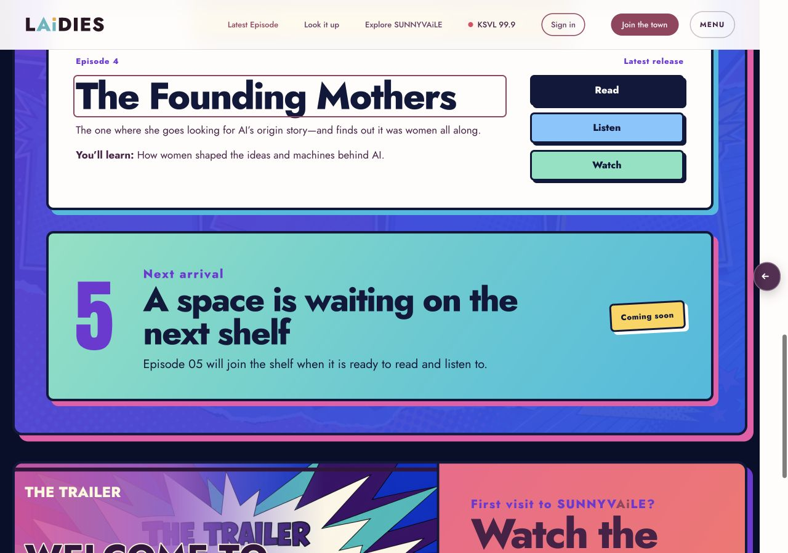
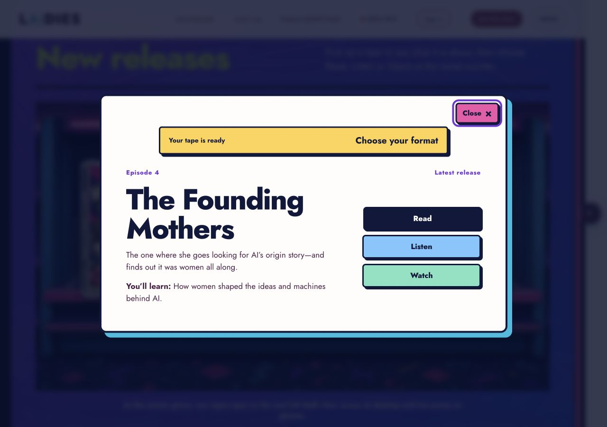

<!doctype html>
<html lang="en">
<meta charset="utf-8">
<title>Chick Flicks episode interaction comparison</title>
<style>
  *{box-sizing:border-box}body{margin:0;background:#070f2b;color:#fff;font:700 16px/1.3 system-ui,sans-serif}.comparison{display:grid;grid-template-columns:1fr 1fr;gap:8px;padding:8px}.panel{margin:0;border:2px solid #15bce0;background:#11183b}.panel figcaption{padding:8px 10px;background:#7137d6}.panel img{display:block;width:100%;height:auto}
</style>
<main class="comparison">
  <figure class="panel"><figcaption>Before: selection changed a counter below the shelf</figcaption></figure>
  <figure class="panel"><figcaption>After: episode details and format choices open immediately</figcaption></figure>
</main>
</html>
